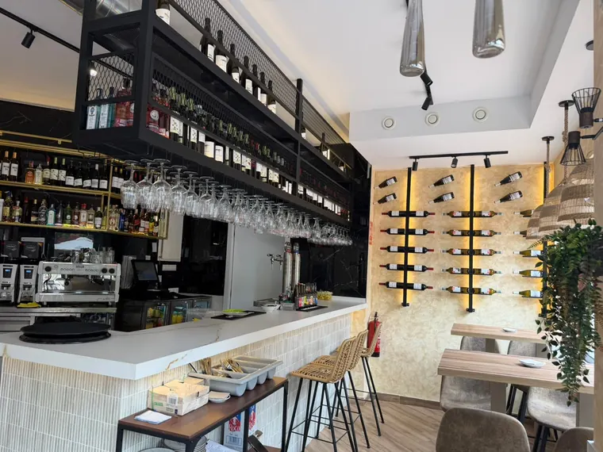
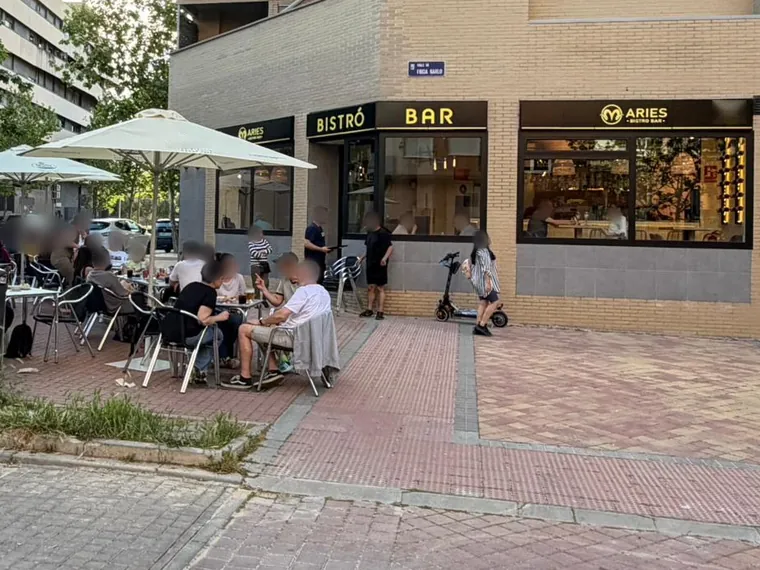
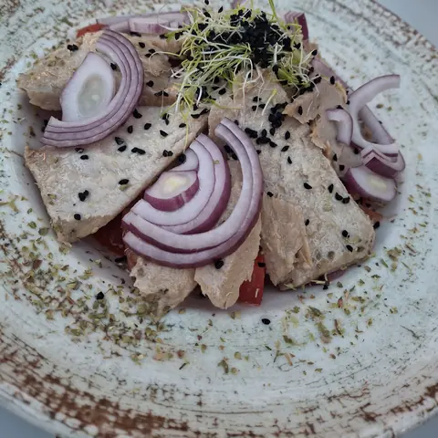
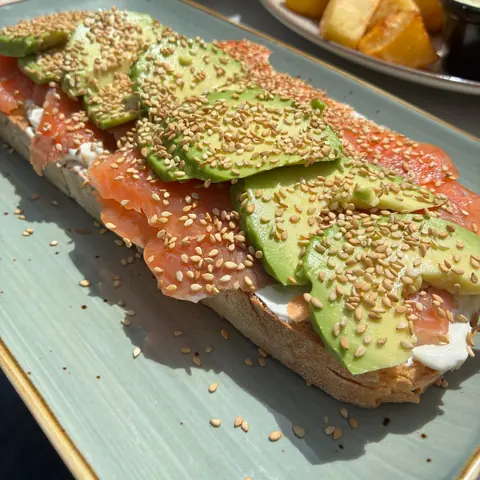
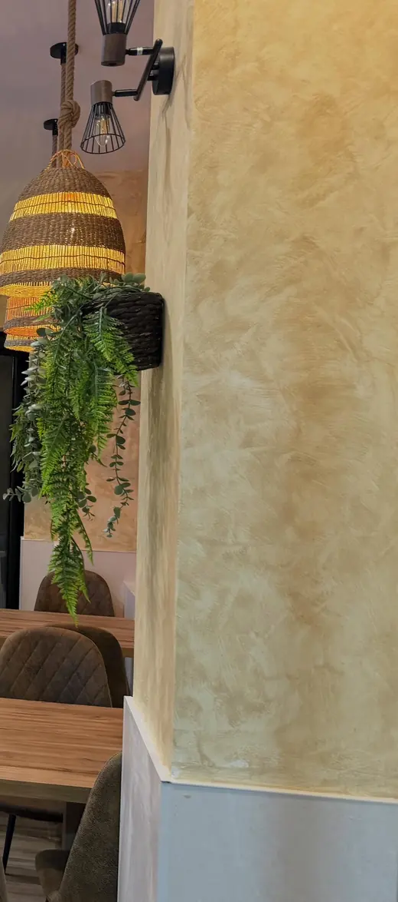
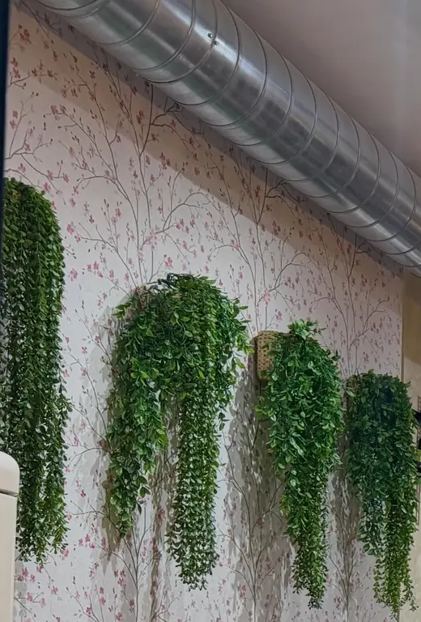
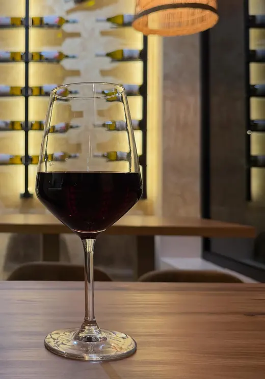
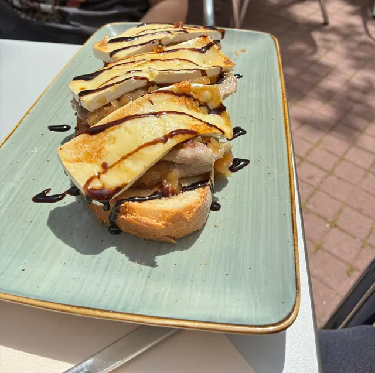
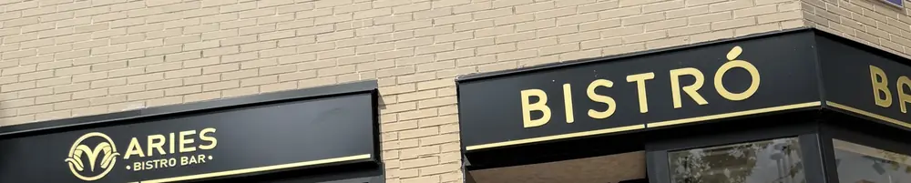

Tostas, raciones y copas. Tu bar de referencia, al lado de casa.
Bistró de barrio en la esquina de la calle Frida Kahlo, 6, en Villa de Vallecas. Desayunos, comidas, cenas y terraza.
4,5 · 171 reseñas en Google
Reservas · 919 52 20 46


Dentro: la barra de mármol, el botellero y la pared de estuco.
Fuera: la terraza en la esquina de la calle Frida Kahlo.
- Desayunos
- Tostas
- Raciones
- Brochetas
- Ensaladas
- Carnes
- Copas
- Terraza
La carta
Ensaladas, tostas, raciones, brochetas y carnes.
- Ensaladas
- Tostas
- Raciones
- Brochetas
- Carnes
La carta, en el local. Reservas por teléfono: 919 52 20 46.
Llamar al 919 52 20 46

Precios a confirmar.
Reservas: 919 52 20 46
Si tienes alguna alergia o intolerancia, pregunta al personal.
El local
Mármol, estuco y helechos.



Barra de mármol, pared de estuco iluminada, lámparas de mimbre y un comedor con papel de flores. Abierto desde la primavera de 2026.
Opiniones
«Menuda sorpresa que hayan abierto este local tan agradable cerca de casa.»
4,5 · 171 reseñas en Google

★★★★★
«nos lo apuntamos como bar de referencia para tomar algo al lado de casa»
★★★★★
«La comida es barata(para como están las cosas) y de cantidad muy buena…»
★★★★★
«Sitio nuevo y muy acogedor. Buena comida, buen servicio y buen ambiente.»
★★★★★
«Muy agradable todo la atención los camareros muy amables y la comida espectacular»
Lo que más sale en sus reseñas: raciones (26), tostas (7), desayunos (5), torrijas (3). Fragmentos literales de reseñas de 5 estrellas en Google Maps, a 23 de octubre de 2026.
Ver las 171 reseñas en GoogleHorario
Todos los días, de 8:30 a 24:00
Reservas · 919 52 20 46
Desayunos, comidas y cenas. Es el horario de Google Maps: pregunta el de cocina al 919 52 20 46, y si vienes un festivo, llama antes.
Dónde estamos

C. Frida Kahlo, 6
Villa de Vallecas, 28051 Madrid
- Terraza
- En la acera, en la esquina.
- Reservas
- Por teléfono: 919 52 20 46
- Aparcamiento
- Gratuito, según una reseña de Google (por confirmar).
El mapa es de Google Maps: solo se carga si lo pides, y entonces Google puede guardar sus propias cookies.
Preguntas
¿No está aquí lo que buscas? Llama al 919 52 20 46.
¿Hay que reservar?
Las reservas se hacen por teléfono, en el 919 52 20 46.
¿Abrís para desayunar?
Sí, abrimos todos los días a las 8:30.
¿Tenéis terraza?
Sí, en la acera de la esquina.
¿Se puede aparcar cerca?
Según una reseña de Google, el aparcamiento es gratuito.
¿Y si tengo alguna alergia?
Si tienes alguna alergia o intolerancia, pregunta al personal.
¿Te guardamos mesa?
Dentro, en la barra, o fuera, en la terraza.
C. Frida Kahlo, 6 · Villa de Vallecas